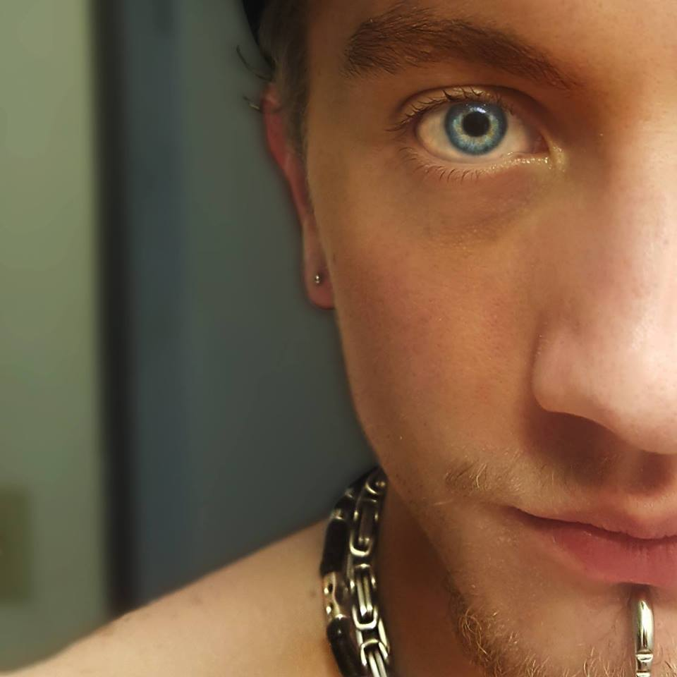
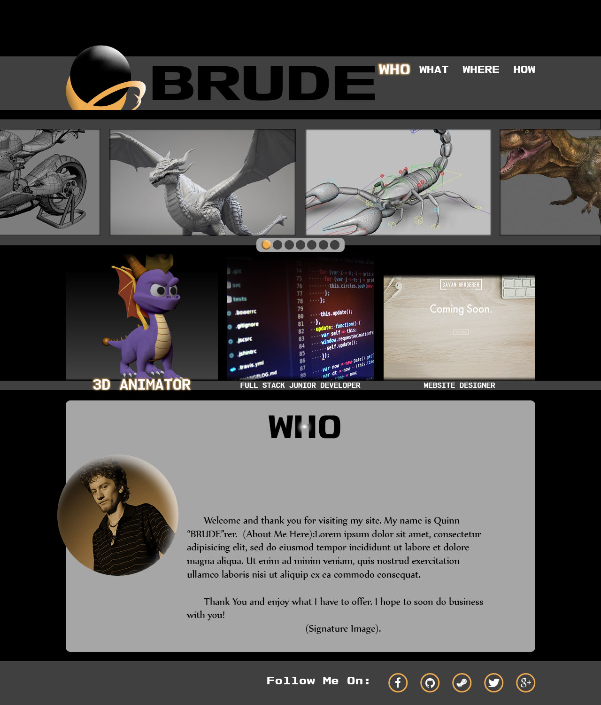

WHO
So this is where I speak of myself on my website, so for the time I'll put some solid info about myself.
I have found an interest in programming for the past year, and decided to take a step toward the right direction. Working on not only making this about me page...about me, I am also aiming to make it similar to this image
Beyond this, I am aiming for a Media Arts BFA. If there is a blink of free time this summer, I plan on spending it on the river, hiking...or honestly just being lazy and sitting down at home to play a video game